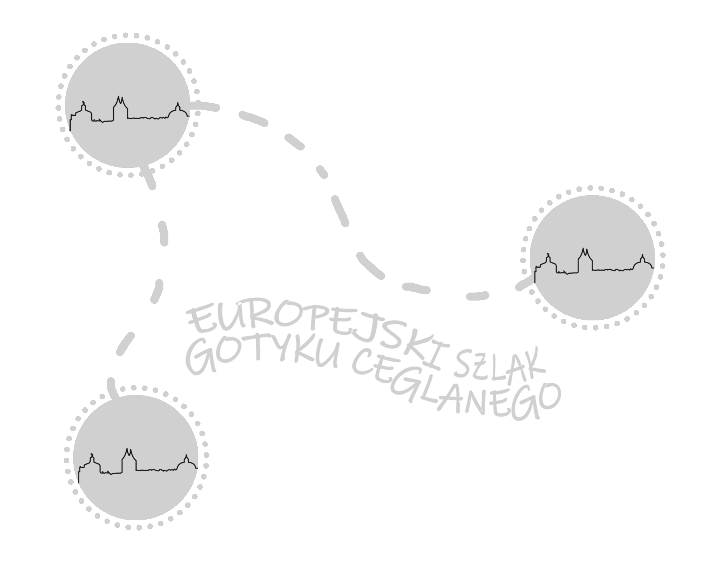

CZYM JEST EUROPEJSKI SZLAK GOTYKU CEGLANEGO?
Europejski Szlak Gotyku Ceglanego to międzynarodowa trasa turystyczna, która łączy zabytki architektury gotyckiej, wzniesione z cegły, głównie w rejonie basenu Morza Bałtyckiego. Styl ten rozwinął się w średniowieczu w regionach, gdzie brakowało kamienia, a cegła stała się dominującym materiałem budowlanym. Gotyk ceglany, charakterystyczny dla Europy Północnej, wyróżnia się monumentalnymi formami i surowym, choć często bogato zdobionym, wyglądem.
Cechy Europejskiego Szlaku Gotyku Ceglanego:
- Cegła jako główny materiał budowlany – brak dostępu do kamienia w rejonach północnych spowodował, że architekci i budowniczowie rozwijali techniki wznoszenia dużych budowli z cegły.
- Surowa elegancja – budowle charakteryzują się prostymi, choć monumentalnymi formami. Zdobienia są zazwyczaj wkomponowane w strukturę budynków, wykorzystując ceglane detale, fryzy i geometryczne wzory.
- Religijne i świeckie budynki – na szlaku znajdują się zarówno gotyckie kościoły, katedry i klasztory, jak i ratusze, zamki, fortyfikacje oraz budowle mieszkalne.

Nadbałtyckie państwa: Dania, Niemcy i Polska, będąc świadome wartości, znaczenia i potencjału ceglanych gotyckich budowli, połączyły siły i utworzyły stowarzyszenie „Europejski Szlak Gotyku Ceglanego” (EUROB). Jego celem jest promowanie wspólnego dziedzictwa kulturalnego i piękna gotyku ceglanego. Co roku w trzeci weekend czerwca we wszystkich miastach należących do tego międzynarodowego projektu obchodzony jest Dzień Gotyku Ceglanego. Na Europejskim Szlaku Gotyku Ceglanego znajduje się 8 polskich miast. To Chełmno, Gdańsk, Grudziądz, Olsztyn, Sławno, Stargrad Szczeciński, Szczecin i Płock. Patrząc na mapę, widać, że Płock jest najdalej na południe wysuniętym miastem w Polsce, przez które ten szlak przebiega. Poniżej osiem płockich atrakcji Europejskiego Szlaku Gotyku Ceglanego.